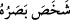
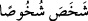

“__WORD__, gözlerini açtı ve hiç kırpmadan gözünü belertti demektir. “__WORD__
ise yükseldi mânâsınadır. Oradaki durum şudur: Kâfirlerin gözleri kıyâmetin
korkusundan şaşkına döner, çaresiz kalakalırlar.
Âyet, kıyâmetin kopmasının Ye’cûc ve Me’cûc’ün ortaya çıkmasından hemen sonra
olacağına delâlet etmektedir. Nitekim Huzeyfe (r.a)’dan rivâyete göre o şöyle demiştir:
“Bir adam Ye’cûc ve Me’cûc çıktıktan sonra bir tay bulsa, kıyâmet kopmadan (onu
terbiye edip de) ona binemez.”[216]
Eğer “Ye’cûc ve Me’cûc’ün seddinin yıkılması ve ‘gerçek vaad’in meydana gelmesi,
dünyanın son günlerinde olacaktır. İnkâr edenlerin gözlerinin donakalması ise kıyâmet
gününde vukû bulacaktır. Halbuki âyette bunlar birbirine yakınmış gibi ifâde
edilmiştir.” denirse, bunun cevâbı şöyledir: Bunlar arasında az bir zaman olması
sebebiyle yok sayılmıştır.
“Yazıklar olsun bize!” yâni ey bizim helâkimiz gel, işte şimdi senin gelme
zamânındır! Dünyada iken “gerçekten biz, bu durumdan” öldükten sonra diriltilmekten
ve hesap için ona döndürülmekten “habersizmişiz;” yâni, tam bir gaflet içindeymişiz,
onun hak olduğunu bilememişiz, derler. Gaflet, tetikte ve uyanık olmamaktan ileri gelen
dalgınlık demektir.
“Hatta biz zalim kimselermişiz.” Bu ifâde ile önce söyledikleri kendilerinin
habersiz/gaflette olmakla kendilerini vasfetmelerini bir kenara bıraktılar. Yâni, biz
ondan habersiz değildik. Çünkü âyetlerle ve uyarılarla ona dikkatimiz çekildi. Bilakis
bu âyetleri ve uyarıları yalanlayarak biz zâlimlerden olduk. Ya da bunları
yalanladığımız için nefsimizi ebedî azâba mâruz bırakarak zâlimlerden olduk.
Akıllı olan, bu beyan ve hatırlatmayı düşünsün. Çünkü Allah, bu hususlara dikkat
çekmiş ve mâzeretlerin önünü kesmiştir.
Bir hadîste şöyle buyrulmuştur: “Allah (kıyâmet gününde) şöyle buyurur: “Ey cin ve
insan topluluğu, ben size gereken nasîhati yaptım. İşte yaptıklarınız amel
defterlerinizde kayıtlıdır. Kim onda hayır bulmuşsa, Allah’a hamd etsin. Kim de
hayırdan başkasını bulursa, kendi nefsinden başkasını ayıplamasın.”[217]
Hikmet ehli bir zât, cenâzesinin ardından ölen bir kimse için acınan insanlara baktı ve
şöyle dedi: “Kendi nefsinize acısanız, sizin için daha hayırlı olurdu. Bu cenaze ise
ölmüş ve şu üç korkudan kurtulmuş: Ölüm meleğini görmek, ölümün acısı ve
sonunun/hâtimesinin nasıl olacağı korkusu.”
Şeyh Sa’dî der ki:
Haberin var mı ey kemik kafes?
Senin canın, nefes dedikleri bir kuştur
Kuş ipten kurtulup kafesten uçunca
Ne kadar çabalasan da sana av olmaz